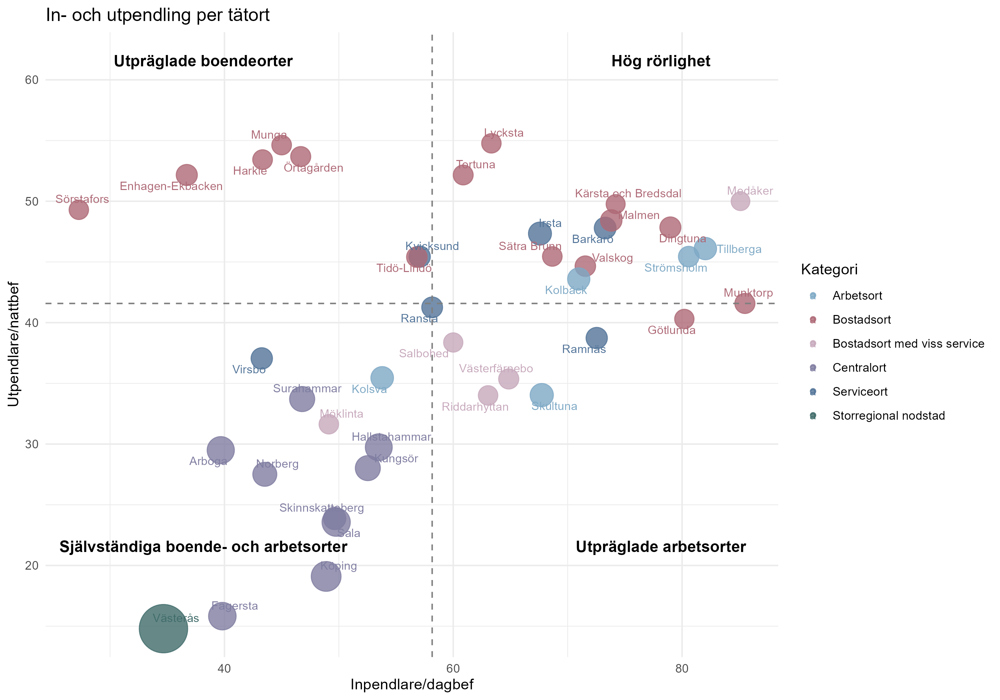
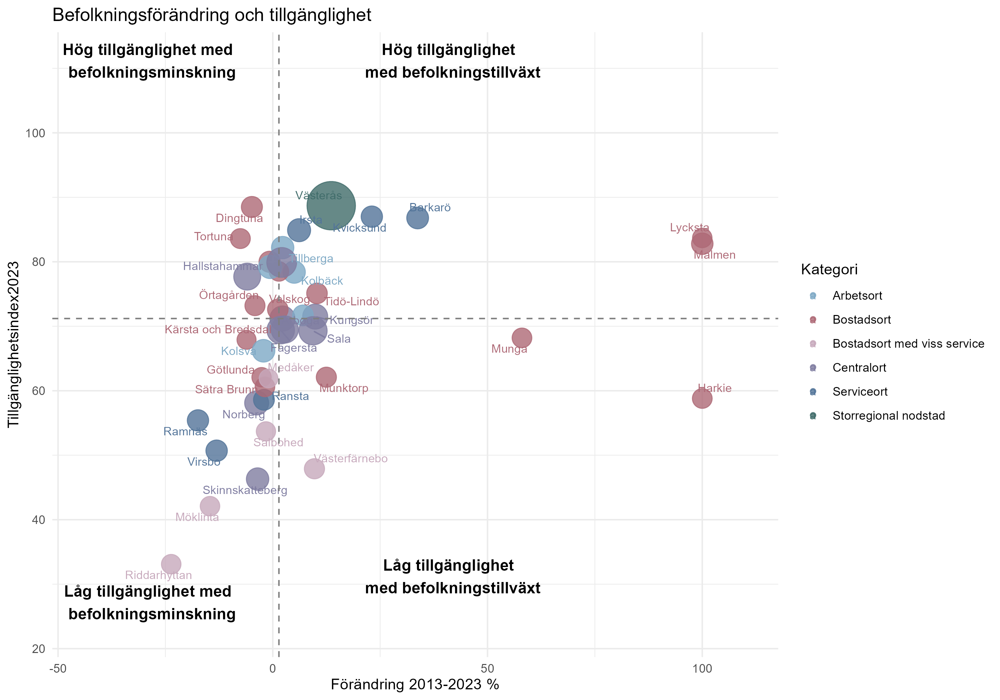

| Ortsklass | 2013 | 2023 |
|---|---|---|
| Storregional nodstad | 1 | 1 |
| Centralort | 9 | 9 |
| Arbetsort | 6 | 5 |
| Serviceort | 4 | 6 |
| Bostadsort med viss service | 0 | 5 |
| Bostadsort | 20 | 18 |
| Småort | 45 | 65 |
| Utanför tätort | 10 | 10 |
| Totalsumma | 95 | 119 |
 Ortstruktur
Ortstruktur
Ortstruktur
Inledning
Västmanlands län har ett strategiskt och centralt läge i Sverige och består av tio centralorter, 34 tätorter, 62 småorter samt övrig landsbygd. Antalet orter har under åren utvecklats och kan förändras av faktorer som till exempel befolkningsförändringar eller ekonomisk tillväxt. Orterna ligger relativt utspridda inom länets kommuner och har olika storlek, funktioner och karaktär. Vissa orter domineras av olika samhällsfunktioner som arbetstillfällen och service medan andra karakteriseras som boendeorter. Utöver orternas storlek, funktioner och karaktär påverkar även det geografiska läget och nivån av utbytet mellan orterna i länet. Orterna binds samman genom transportinfrastruktur som i sin tur skapar förutsättningar till utbyte mellan orterna. Mellan vissa orter är utbytet mindre, vilket kan bero på orternas relativa storlek eller avstånd. Generellt har större orter fler funktioner än mindre orter där de mindre orterna och övrig landsbygd är beroende av dessa angående arbete och service. Alla orter har olika utmaningar och förutsättningar för att utvecklas och orternas beroende av varandra kan skiljas åt. Med denna anledning finns ett motiv till att få en gemensam bild av ortstrukturen i Västmanland.
Ortstrukturen handlar om förhållandet mellan orter och anges dels av storlek och vilka funktioner orterna har och dels av läget i relation till varandra samt utbytet mellan dem. I ortstrukturen delas orterna in i olika ortstyper baserat på deras funktioner och roller i den regionala geografin. Orterna har delats in i åtta nivåer: Storregional nodstad, Centralort, Arbetsort, Serviceort, Bostadsort med viss service, Bostadsort, Småort och Utanför tätort.
Det finns olika typer av ortsstrukturer i landet, där de två mest förekommande strukturerna är enkärninga (monocentrisk) respektive flerkärniga (polycentrisk). Strukturerna kan ses som två kategoriseringar som beskriver den dominerande karaktären i en funktionell geografi. Detta innebär däremot inte att en region är antingen fullt ut enkärnig eller flerkärning, utan graden av flerkärnighet baseras även på vilken geografisk nivå och vilket perspektiv som illustreras.
Metod
Genom att studera orternas roller och funktioner ges en större förståelse för funktionella samband och utvecklingsförutsättningar i Västmanland. Orterna har delats in i de olika ortstyperna utifrån ett dataunderlag bestående av: folkmängd, dag- och nattbefolkning, relationen mellan dag- och nattbefolkning, in- och utpendling samt servicegrad. Därefter har underlaget för orterna analyserats och avgränsats för att sedan klassificera in orterna i ortstyperna. Övrigt dataunderlag som har ingått i olika delar av analysen för klassificeringen är: försörjningskvot, försörjningskvotens förändring, in- och utflyttning, andelen som bor och arbetar i samma ort och andelen småhus. Statistiken är baserade på SCB:s Regiondatabas för Västmanland, Pipos regionalanalys och egna beräkningar.
Dagbefolkning = sysselsatta med arbetsplats i området.
Nattbefolkning = sysselsatta med bostad i området.
I analysen har vi även tagit del av samtliga kommuners gällande översiktsplaner med fokus på vilka orter som lyfts fram, hur de benämns och hanteras i planeringen kopplat till funktion och olika ämnesområden. Hänsyn har även tagits till planernas aktualitet, som skiljer sig mellan ganska många år - det sträcker sig från 2007 till 2023. I vår hantering har detta underlag hjälpt oss att kvalitetsgranska den gjorda klassificeringen och bistått vid eventuella gränsdragningsproblem. Nedan visas det underlag och avgränsningar som använts vid klassificeringen.
Storregional nodstad:
- Centralort med enskilt störst folkmängd i länet, stor natt- och dagbefolkning inklusive alla samhällsfunktioner i högre grad (service, utbildning, vård)
Centralort:
- Huvudort, befolkningsmässigt störst tätort i respektive kommun
Arbetsort:
Tätorter som har under 50% utpendlare över tätortsgräns
Dagbefolkningen är mycket stor i relation till nattbefolkningen (nattbefolkning dividerat med dagbefolkning: andelen förvärsarbetande med arbetsställe i orten). Ju lägre värde på nattbefolkning i relation till dagbefolkning desto fler invånare är förvärvstarbetande med arbete i orten
Över 400 personer i dagbefolkning
Serviceort:
Tätorter som har under 50% utpendlare över tätort
Dagbefolkningen är stor i relation till nattbefolkningen men i mindre utsträckning än för arbetsorter (nattbefolkning dividerat med dagbefolkning)
Över 1 000 personer i folkmängd
-Undantag: (känd information om att viss service finns och uppfyller nästintill alla krav för serviceort)
Bostadsort med viss service:
Tätorter med över 50% utpendlare över tätortsgräns
Tätorter med under 50% utpendlare över tätortsgräns, där nattbefolkningen är större än dagbefolkningen (nattbefolkning dividerat med dagbefolkning)
Uppfyller inte kraven för arbetsort eller serviceort
Bostadsort med servicegrad på nivå 3–4 enligt Tillväxtverkets gradering:
- Servicegrad 4: paketombud + dagligvarubutik (bemannad fullt utbud)
- Servicegrad 3: dagligvarubutik (bemannad fullt utbud)
Bostadsort:
Tätorter med över 50% utpendlare över tätortsgräns
Tätorter med under 50% utpendlare över tätortsgräns, där nattbefolkningen är större än dagbefolkningen (nattbefolkning dividerat med dagbefolkning)
Uppfyller inte kraven för arbetsort eller serviceort
Kan inneha någon typ av service, enligt servicegrad 1-2 enligt Tillväxtverkets gradering:
- Servicegrad 2: paketombud + dagligvarubutik (obemannad eller begränsat utbud)
- Servicegrad 1: paketombud
Småort:
- Ort med <50-200 invånare
(I resterande del av rapporterns kartor förekommer inte småorterna. I tabellerna återkommer småorterna inom utanför tätort)
Utanför tätort:
- Övrig landsbygd
(Observera att utanför tätort inte förekommer i kartmaterialet i rapporten utan endast visas i tabellerna)
Ortstrukturens utveckling
Enligt SCB fanns det totalt cirka 470 tätorter i Östra Mellansverige med minst 200 invånare år 2013. Från år 2013 till 2023 har orterna utvecklats på olika sätt, vilket totalt sett har medfört en förändring av antalet orter. Vissa nya tätorter har tillkommit sedan år 2013, medan andra tidigare tätorter inte längre defineras som tätort (till exempel till följd av minskande befolkning). Detsamma gäller för småorterna i länet.
Ortstrukturens utveckling kan gå i riktning mot ett mer sammanhängande län eller mindre sammanhängande, vilket har en koppling till orternas betydelse och roll i den regionala geografin. Nedan visas hur antalet orter per ortstyp har utvecklats under en tioårsperiod. Totalt sett har orterna i länet ökat från 95 till 119. I den andra fliken redovisas andelen folkmängd i de olika ortstyperna samt utvecklingen över tid. Att andelen folkmängd har minskat eller ökat i en ortstyp kan bero på att antalet orter har förändrats med tiden. Trots det går det att åskådliggöra en tydlig bild över i vilka ortstyper folkmängden är som störst respektive minst samt hur utvecklingen sett ut.
| Ortsklass | 2013 | 2023 |
|---|---|---|
| Storregional nodstad | 44.4 | 46.6 |
| Centralort | 31.7 | 29.9 |
| Arbetsort | 5.2 | 3.8 |
| Serviceort | 2.3 | 3.2 |
| Bostadsort med viss service | 0.0 | 0.6 |
| Bostadsort | 4.2 | 3.6 |
| Utanför tätort | 12.2 | 12.4 |
| Totalsumma | 100.0 | 100.0 |
Kommentar: Tillgänglighetsindex finns inte att tillgå för år 2013, därför är det 0 i klassen för bostadsort med viss service.
Uppgifterna är hämtade från Statistiska centralbyråns Regiondatabas för Västmanland och därefter klassificerade efter den tidigare beskrivna metoden. Eftersom tillgänglighetsindex från Tillväxtverket inte finns för år 2013 har vi inte kunnat sätta motsvarande klassning för “Bostadsort med viss service”. Vi har dock valt att redovisa den för år 2023. Allt annat oförändrat skulle de aktuella orterna alltså vara klassade som Bostadsort år 2013.
Källa: SCB
Några av de tidigare småorterna har under senare tid utvecklats till bostadsorter på grund av deras befolkningsökning. Vissa bostadsorter har med tiden utvecklats till service- eller arbetsort eller gått från serviceort till arbetsort eller tvärtom. Till följd av orternas utveckling har den regionala geografin delvis förändrats då en del orter även minskat i befolkning, vilket kan göra att orten inte längre defineras som tätort eller småort. Vid klassificering av orter kan därmed vissa orterna utgå medan andra, nya kommer till. De nya tätorterna registreras när befokningen i en ort passerar 200 invånare. Anledningen till att vissa kommuner har ett fåtal tätorter kan till exempel bero på att flera tätorter tidigare vuxit ihop till en enda. Småorter som på egen hand har för få invånare kan även växa ihop på samma sätt till en tätort, även om det är mindre vanligt. Västmanland har en hög tätortsgrad, 88 %, vilket är samma grad som för riket i helhet. Tätortsgraden anser andelen befolkning i tätorterna i förhållande till den totala befolkningen i länet. Detta innebär vidare att 12 % av befolkningen i länet bor utanför tätort.
Tätortsgrad = Andel av länets invånare som bor i tätorter.
Befolkningsförändring i tätorterna
I Västmanland bor cirka 280 000 invånare och 88 % är bosatta i någon av länets tätorter. Länet har en av de högsta tätortsgraderna i Sverige, efter Stockholm och Skåne bland annat till följd av att länet är relativt litet till ytan. I tätorten Västerås bor cirka 130 000 invånare, vilket motsvarar nästan hälften av länets totala befolkning. De två näst största tätorterna är Köping, med cirka 18 500 invånare och Sala, med cirka 13 700 invånare. I länets 44 tätorter har befolkningen från år 2013 till 2023 ökat med cirka 21 700 invånare.
Befolkningen i länet har mestadels ökat i bostads- och serviceorter som ligger i närheten av den storregionala nodstaden Västerås eller centralorterna Hallstahammar och Sala. Tätorterna i länet som har minskat i befolkning är främst bostads- och serviceorter, som antingen ligger längre ifrån den storregionala nodstaden, centralorter eller i utkanten av kommunernas gränser. I Sverige har det skett en kraftig befolkningstillväxt i många delar av landet och ur ett internationellt perspektiv har urbaniseringen varit stark. Detta har inneburit en befolkningsutveckling i framför allt tätorter. Vid sidan av urbaniseringen minskar befolkningen i andra delar av landet såväl som inom länet. Det gäller främst mindre bostadsorter, småorter samt övrig landsbygd. Som tidigare nämnts har de flesta orter i länet haft en positiv befolkningsutveckling under den senaste tioårsperioden. Totalt är det 19 orter som haft en positiv befolkningsutveckling i Västmanland, medan 10 orter haft en negativ befolkningsutveckling. Från år 2000 till 2023 har befolkningen i tätorterna totalt ökat med 16 procent. Småorterna har den största procentuella befolkningsökningen mellan åren 2000 och 2023, totalt 60 procent.Det har dels tillkommit många småorter och dels blir den relativa ökningen större bland orter med liten folkmängd än bland de större orterna. Sett till antal personer har tillväxten från år 2013 till 2023 varit som störst i storregionala nodstaden och sedan serviceorter samt centralorter. I arbets- och bostadsorterna har befolkningen totalt sett minskat.
Flyttning - övergripande bild
Flyttningar till och från länets tätorter redovisas dels övergripande per tätort och ortsklass och dels efter riktning (mellan två orter) nedan i dokumentet. För att ge en övergripande bild av hur flyttmönstren skiljer sig åt mellan orterna har vi tittat på den relativa nettoflyttningen, uttryckt som antalet inflyttare dividerat med antalet utflyttare och multiplicerat med 100. Ett värde som understiger 100 anger att antalet inflyttare är färre än antalet utflyttare, vilket ger negativ nettoflyttning. Omvänt gäller att ju högre värde desto fler inflyttare har orten i relation till utflyttare. Aggregerat hade bostadsorterna och Västerås högst relativ inflyttning. Centralorterna och bostadsorter med viss service hade omvänt högst relativ utflyttning under 2023. I övriga ortstyper var antalet inflyttare i princip det samma som antalet utflyttare.
Inflyttning
Flyttningar över tätortsgräns är ett annorlunda studieobjekt jämfört med flyttningar över kommungräns. I det senare fallet är befolkningen som flyttar väldigt koncentrerade till vissa specifika åldersgrupper och orsakerna vanligen kopplade till studier eller arbete. Vad gäller flyttningar mellan tätorter berör de en större del av befolkningen i fler åldersgrupper och avser ofta mer vardagsnära orsaker till flyttningar, som till exempel behovet av större eller mindre bostad, närhet till skola, grönområden med mera. För tätorten Västerås betyder det till exempel att man har större inflyttning än utflyttning mot tätorter i övriga länet och övriga Sverige, men större utflyttning än inflyttning mot övriga tätorter i kommunen. De flesta övriga centralorter i länet har ett omvänt förhållande: fler inflyttare från den egna kommunen än utflyttare inom den samma. Alla centralorter i länet har negativt flyttnetto mot tätorter i övriga länet och övriga landet. Utöver Västerås har endast Kungsör haft positivt flyttnetto mot övriga länet och landet, vilket också syntes i befolkningsförändringen under 2024, då dessa två kommuner var de enda i länet som ökade sin befolkning.
I tabellerna redovisas de totala flyttningarna över tätortsgräns för de olika ortsklasserna. Tabellen med summerade data blir ett komplement till kartbilden, som visar enskilda flyttströmmar mellan två orter. Här framträder istället andra mönster, inte minst i fliken som visar tabellen efter var inflyttaren tidigare bodde. Notera att relationen hela tiden avser flyttningar mellan tätorter. Här redovisas även “utanför tätort” (som inte syns i kartorna då det motsvarar en större geografi än en enskild punkt). Inflyttningen till utanför tätort (som även inbegriper småorter) motsvarar 12 procent av flyttningarna.
| Ortsklass | Inflyttning totalt | Inflyttning totalt % |
|---|---|---|
| Storregional nodstad | 7133 | 44 |
| Centralort | 4716 | 29 |
| Utanför tätort | 2011 | 12 |
| Arbetsort | 876 | 5 |
| Bostadsort | 774 | 5 |
| Serviceort | 659 | 4 |
| Bostadsort med viss service | 135 | 1 |
| Totalt | 16304 | 100 |
| Ortsklass | Inflyttning inom kommun | Inflyttning inom län men över kommun | Inflyttning inom landet men över län |
|---|---|---|---|
| Storregional nodstad | 1196 | 1336 | 4601 |
| Centralort | 838 | 1634 | 2244 |
| Utanför tätort | 1025 | 430 | 556 |
| Arbetsort | 502 | 171 | 203 |
| Bostadsort | 471 | 152 | 151 |
| Serviceort | 375 | 130 | 154 |
| Bostadsort med viss service | 69 | 14 | 52 |
| Totalt | 4476 | 3867 | 7961 |
Uppgifterna är hämtade från Statistiska centralbyråns Regiondatabas för Västmanland och därefter klassificerade efter den tidigare beskrivna metoden. Avser samtliga flyttningar mellan tätorter i Västmanland och övriga Sverige. “Inflyttning inom kommun” avser således inflyttning till tätorter i respektive ortsklass från en annan tätort inom kommunen och så vidare.
Källa: SCB
Utflyttning
In- och utflyttningen mellan orter kan både skapa möjligheter och utmaningar, dels gällande befolkningsmängd och befolkningssammansättning och dels för bostadsmarknaden, arbetsmarknaden samt tillgängligheten till serviceutbud. Tidigare hade flyttningarna en större roll gällande arbetskraftens rörlighet. I takt med mer välutvecklad infrastruktur har människors möjlighet till att bo och arbeta i olika orter ökat, vilket har gjort att arbetspendlingen övertagit en större del av den tidigare roll som flyttningar hade. Flera olika faktorer påverkar benägenheten att flytta utifrån ett sådant perspektiv. I en studie som genomfördes år 2023 på uppdrag av regionen framkom att en utbyggd infrastruktur, med ökade möjligheter att nå större kluster av arbetsställen, sannolikt kommer att påverka bostadsmarknaden i termer av ekonomisk rationalitet. Utvecklingen av det så kallade Tobins q-måttet förväntades öka i alla länets kommuner utifrån de insatser som finns beskrivna i Länstransportplanen. Det kan låta teoretiskt, men vad det främst betyder i praktiken är att omlandet som drar nytta av den storregionala nodstadens arbetsplatsutbud utökas och därmed möjliggör för både kvarboende och utbyggnad i de delar av länet där verkligheten inte ser ut så idag.
Flyttningsmönster är relativt stabila över tid, även om förändringar naturligtvis uppstår då och då. I samband med pandemin såg vi i länet en utökad utflyttning från Västerås till närliggande mindre kommuner. Det var ett mönster som syntes i flera delar av landet. Gemensamt är dock att det blev en relativt kort “grön våg”, efter bara ett par år så såg flyttmönstren åter ut som före pandemin. En större och mer långtgående förändring är att hela Sverige har fått en minskad invandring under 2020-talet. Siffror för in- och utvandring visas inte i den här studien då den fokuserar på svenska tätorter, men även inrikes omflyttning kan påverkas, då det är relativt vanligt efter den initiala invandringen. Inrikes inflyttning har minskat till alla kommuner i länet, undantaget Västerås, under 2020-talet.
I tabellerna redovisas de totala flyttningarna över tätortsgräns för de olika ortsklasserna. Tabellen med summerade data blir ett komplement till kartbilden, som visar enskilda flyttströmmar mellan två orter. I tabellen framträder istället andra mönster, inte minst i tabellen som visar utflyttning inom och utom länet. I Västerås och övriga centralorter är utflyttning över länsgräns den enskilt största posten, medan det är en mer begränsad rörelse för övriga ortsklasser. Notera att relationen hela tiden avser flyttningar mellan tätorter. Här redovisas även “utanför tätort” (som inte syns i kartorna då det motsvarar en större geografi än en enskild punkt). Dessa flyttningar motsvarar 12 procent av alla utflyttningar.
| Ortsklass | Utflyttning totalt | Utflyttning totalt % |
|---|---|---|
| Storregional nodstad | 6636 | 41 |
| Centralort | 5217 | 32 |
| Utanför tätort | 1970 | 12 |
| Arbetsort | 878 | 5 |
| Bostadsort | 703 | 4 |
| Serviceort | 662 | 4 |
| Bostadsort med viss service | 148 | 1 |
| Totalt | 16214 | 100 |
| Ortsklass | Utflyttning inom kommun | Utflyttning inom län men över kommun | Utflyttning inom landet men över län |
|---|---|---|---|
| Storregional nodstad | 1234 | 1147 | 4255 |
| Centralort | 691 | 1914 | 2612 |
| Utanför tätort | 1109 | 375 | 486 |
| Arbetsort | 527 | 183 | 168 |
| Bostadsort | 464 | 94 | 145 |
| Serviceort | 351 | 145 | 166 |
| Bostadsort med viss service | 86 | 18 | 44 |
| Totalt | 4462 | 3876 | 7876 |
Uppgifterna är hämtade från Statistiska centralbyråns Regiondatabas för Västmanland och därefter klassificerade efter den tidigare beskrivna metoden. Avser samtliga flyttningar mellan tätorter i Västmanland och övriga Sverige. “Utflyttning inom kommun” avser således utflyttning från tätorter i respektive ortsklass till en annan tätort inom kommunen och så vidare.
Källa: SCB
Sysselsatta efter bostadens belägenhet
Utvecklingen av antalet förvärsarbetande beror på geografiska och ekonomiska förutsättningar som påverkar orternas tillväxtmöjligheter. Nattbefolkningen omfattas av antalet förvärsarbetande 16 år och äldre med bostad i orten, det vill säga den bofasta befolkningen inom ortens gränser. Nattbefolkningen i en ort kan ha sitt arbetställe inom eller utanför orten. I orter där nattbefolkningen växer, ökar ofta behovet av lokal sysselsättning och service, vilket vidare kan skapa nya arbetstillfällen samt stärka orterns ekonomi. Medan orter som får mindre nattbefolkning innebär att färre bor kvar eller flyttar från orten, vilket kan medföra en försvagning av den lokala arbetsmarknaden och ortens utveckling. Kombinationen av tillgänglighet till en centralort eller andra omkringliggande orter, lokal arbetsmarknad samt goda kommunikationer kan möjliggöra både för inflyttning och för fler människor att stanna kvar i orten. På en övergripande nivå har den totala förvärsarbetande nattbefolkningen i Västmanland ökat fram till år 2023. Fler antal orter i länet har även haft en ökad nattbefolkning mellan åren 2013-2023 än minskad. Den totala förvärvsarbetande nattbefolkningen i länet går från cirka 100 i den minsta tätorten till 64 000 sysselsatta i Västerås år 2023.
Sysselsatta efter arbetsställets belägenhet
Hur den förvärvsarbetande dagbefolkningen är fördelad i länet ger en bild av flerkärnigheten samt orternas funktion och roll i ortsystemet. Hur dagbefolkningen har utvecklats under senare tid ger en uppfattning om orternas ekonomiska aktiviteter samt dragningskraft. Dagbefolkningen omfattas av antalet förvärvsarbetande 16 år och äldre med arbetsställe i orten oberoende bostadens belägenhet. Dagbefolkningen i en ort kan bestå av både lokalt boende inklusive befolkning som pendlar in till orten för arbete. I orter där dagbefolkningen haft en positiv utveckling, ökar ofta behovet av arbetsmarknadsutveckling, service och infrastruktur, vilket i sin tur kan skapa fler arbetstillfällen och stärka orterns lokala ekonomiska utveckling. Omvänt kan orter med negativ utveckling av dagbefolkningen få svårare att behålla ortens lokala arbetsmarknad samt påverka den ekonomiska utvecklingen negativt. Den totala dagbefolkningen i Västmanland bestod av cirka 131 000 sysselsatta år 2023 år och har ökat från 2013. Fler orter har haft en ökad dagbefolkning än minskad. För den totala befolkningen varierade den förvärvsarbetande dagbefolkningen i länet mellan olika tätorter, från cirka 10 personer i den minsta tätorten till 70 000 sysselsatta i Västerås år 2023.
Sammantaget visar utvecklingen av den förvärvsarbetande natt- och dagbefolkningen arbetsmarknadsregionens struktur i förhållande till de olika ortstyperna. Några mönster kan urskiljas genom att jämföra utvecklingen av nattbefolkningen respektive dagbefolkningen. De allra flesta större orter såsom Västerås, centralorterna samt arbets- och serviceorter har i flera fall en liknande utveckling av natt- och dagbefolkning. Exempelvis orter som har utvecklats positivt i form av ekonomi, bostäder samt infrastruktur får ofta både fler invånare som bosätter sig i orten samt fler invånare som har sitt arbetsställe i orten. I ett mindre antal orter skiljer sig utvecklingsriktningen åt mellan natt- och dagbefolkningen, exempelvis inom centralorterna Skinnskatteberg och Arboga. När en ort har en minskad nattbefolkning men ökad dagbefolkning innebär det att det är en minskad befolkning som har sin bostad i orten men en ökad befolkning som har sitt arbetsställe i orten. Detta kan speglas av funktionella samband i förhållande till exempelvis bostadsbrist, serviceutbud eller arbets- och utbildningsmöjligheter i orten, men även orterns relation till andra orter. Omvänt, om en ort har ökad nattbefolkning men minskad utveckling i dagbefolkning, kan ortens befolkning utvecklats med fler som blivit permanent bosatta medan arbetstillfällena och serviceutbudet kommit att vara mer begränsat över tid. Vidare sammankopplas det med faktorer som ortens karaktär, dragningskraft eller attraktivitet som kan påverka utvecklingen. Många av de mindre orterna sett till befolkning har under tidigare decennier påverkats av strukturomvandlingar där bland annat sysselsättningen inom tillverkningsindustri minskat och andra tjänstenäringar ökat. Därav har även flera av centralorternas beroende av tillväxt i kärnorna ökat.
I länet såväl som övriga Sverige har det pågått en geografisk koncentration av befolkning samt arbetstillfällen. På lokal nivå skapar detta en ökad koncentration av arbetstillfällen till orter med funktion och karaktär som arbetsmarknadscentrum. I jämförelse med arbetstillfällena är å andra sidan befolkningen mer spridd lokalt inom gränserna, vilket gör att mindre orter generellt har mer utvecklingsförutsättningar för nattbefolkning än dagbefolkning. De orter som har bäst förutsättningar sett till koncentrationen av befolkning samt arbete tenderar att även ha högre tillgänglighet till större arbetsmarknadscentrum. Ju större dagbefolkning en ort har, desto större kan även skillnaderna bli mellan dag- och nattbefolkningen, vilket är mer vanligt för den storregionala nodstaden Västerås, centralorter samt arbetsorter som fungerar som lokala arbetsmarknadscentrum. Orter som har mindre skillnad mellan dag- nattbefolkning kan vara mer självförsörjande, vilket omfattas av många som både bor och arbetar i samma ort.
Försörjningskvoten i tätorterna
För att få en förståelse för orternas framtida utvecklingspotential samt tillväxtförutsättningar ur ett försörjningsperspektiv är det viktigt att beakta befolkningsstrukturen i länet. Ett mått som många gånger används för att analysera försörjningssituationen är demografisk försörjningskvot, vilket benämns som summan av yngre och äldre i befolkningen (åldrarna 0-19 och 65+) i förhållande till befolkningen i arbetsför ålder (20-64). Åldersstrukturen skiljer sig åt för olika kommuner och orter, vilket betyder att utmaningen varierar mellan olika platser. Ju högre försörjningskvoten är desto tyngre är försörjningsbördan, med andra ord få som försörjer många i en ort. En åldrande befolkning, låga födelsetal samt att fler yngre är benägna att flytta från mindre till större orter påverkar försörjningskvoten, vilket har en stor betydelse för ortens långsiktiga utveckling. År 2023 var länets totala försörjningskvot cirka 82. Detta innebär att på 100 personer i de mest arbetsföra åldrarna 20-64 år förekommer det 82 personer som är yngre eller äldre. Generellt återkommande är att försörjningskvoten ofta är lägre i större orter då de vanligtvis har ett bredare utbud när det kommer till arbetstillfällen, service samt utbildning. I länets olika tätorter varierar försörjningskvoten mellan cirka 50 till 120.
Försörjningskvotens förändring
Den demografiska utvecklingen kan omvandla befolkningsstrukturen och försörjningskvotens förändring i orterna kan ställa krav på anpassning samt utmaningar för framtiden. Beroende på ortens storlek och geografiska läge utvecklas den lokala försöjningskvoten på varierande sätt i länet. Generellt sett förekommer vanligtvis en ökning i mindre orter och mer perifera delar, vilket beror på att en större andel yngre invånare flyttar ifrån samtidigt som andelen äldre bor kvar ökar. När befolkningen i arbetsför ålder i allt större grad koncentreras till större orter som Västerås och centralorterna kommer försörjningsbördan med större sannolikhet att öka i de mer perifera delarna. Orter som fungerar som mellannoder kan attrahera fler i arbetsför ålder från omkringliggande mindre orter, vilket tillfälligt kan leda till en lägre försörjningskvot. Förändringen kan skapa mer skilda förutsättningar för den lokala utvecklingen samt resursfördelningen mellan de olika orterna i länet. Försörjningskvotens förändring över tid förstärker bilden av att den storregionala nodstaden samt mindre närliggande orter har en mer gynnsam och positiv utveckling. I länet totalt sett från år 2013 till 2023 har försörjningskvoten ökat med cirka 5 enheter.
Överlag ger måttet om demografisk försörjningskvot en översiktlig bild över hur försörjningssituationen ser ut gällande resursfördelning, service, välfärd samt ekonomisk utveckling i orterna. Befolkningsutvecklingen medför att färre ska försörja fler, vilket innebär att andelen i arbetsför ålder minskar. Generellt ökar andelen äldre i länet, i synnerhet 80 + medan andelen barn minskar. Koncentrationen av arbetstillfällen samt utbildningsmöjligheter i en ort är en påverkande faktor när det kommer till att upprätthålla en balanserad försörjning. Inom de nästkommande åren kommer försörjningskvoten i länet sannolikt att fortsätta stiga, vilket kan komma att skapa mer omfattande skillnader mellan de olika orterna. Värt att komma ihåg är också att den demografiska försörjningskvoten inte tar hänsyn till hur stor andel av befolkningen som ingår i arbetskraften som sysselsatta. Den faktiska försörjningskvoten är därför högre än vad den rent demografiska anger.
Pendling - övergripande bild
Pendlingen till och från länets tätorter redovisas dels övergripande per tätort och ortsklass och dels som flöden mellan tätorter i och utanför länet. Pendlingen och relationen mellan dag- och nattbefolkningen har varit en del i den grundläggande klassificeringen i ortsklasser, vilket gör att mönstret till stora delar går igenom från övriga kartor. För den övergripande pendlingen visas nettopendling per tätort som ett relativt mått. Genom att dividera dagbefolkningen (personer med arbetsplats i området) med nattbefolkningen (personer med bostad i området) och multiplicera med 100 får vi ett mått på hur relationen mellan dag och nattbefolkningen ser ut. Ett värde över 100 talar om att nettopendlingen är positiv (fler inpendlare än utpendlare). De orter som inte har en positiv nettopendling har grupperats efter om den negativa nettopendlingen är låg, medel eller hög. Ju lägre värde desto större negativ nettopendling har orten.
Inpendling till tätorter i Västmanland
I ortstrukturen är utbytet mellan tätorterna som sker via pendling en avgörande faktor som styr graden av flerkärnighet. Under en längre tid har en regionförstoring pågått, vilket har skapat fler möjligheter att resa längre sträckor till både arbete samt bostad. Detta har även drivit utvecklingen av transportsystemet som har lett till minskade tider för resor. Pendlingen till tätorter i Västmanland ger en delvis annorlunda bild än pendlingen över kommungräns, vilket annars är den vanligaste redovisningsformen. Samtidigt som de större stråken fortfarande är enkla att urskilja så ger den högre detaljeringsgraden en annan förståelse för de dagliga flödena. När vi tittar på inpendling över tätortsgräns är det ungefär 62 000 personer som pendlar till sitt arbete från någon av länets tätorter. Av dessa är det drygt 47 500 personer som pendlar över tätortsgräns inom länet. Av dessa är det i sin tur drygt 16 500 personer som pendlar in till den storregionala nodstaden. Övergripande berör inpendlingen till stor del de större orterna och arbetsorterna. Kartbilden visar att pendlingen till arbetsplatser i Västmanland i huvudsak utgår ifrån en begränsad radie och berör de större tätorterna i de angränsande länen alternativt närliggande orter med historisk och kulturell anknytning.
I tabellerna redovisas den totala inpendlingen, inpendlingen mellan orterna inom länet samt från övriga riket. Tabellerna med summerade data blir ett komplement till kartbilden som visar enskilda pendlingsströmmar mellan två orter. Tabellerna ger andra perspektiv som åskådliggör både den totala inpendlingen respektive hur stor inpendlingen är både inom och utom länet för de olika ortstyperna, inklusive utanför tätort (som här även består av småorterna). Inpendlingen totalt för ortsklasserna visar att Västerås med cirka 50 procent och centralorterna med cirka 30 procent har störst inpendling. Utanför tätort (som inte syns i kartorna då det motsvarar en större geografi än en enskild punkt) motsvarar cirka 11 procent av all inpendling. Hur stor respektive liten inpendlingen för varje ortsklass är, beror även på antalet orter samt befolkning. För år 2023 har länet exempelvis mer än dubbelt så många bostadsorter än serviceorter medan dagbefolkningen (antalet sysselsatta efter arbetsställets belägenhet) är relativt lika för dem. I relation till antalet orter samt antalet dagbefolkning inom respektive ortsklass har arbetsorterna störst inpendling, vilket innebär att en större del av befolkningen som arbetar i en arbetsort kommer utifrån orten.
| Ortsklass | Inpendling totalt | Inpendling totalt % |
|---|---|---|
| Storregional nodstad | 24242 | 49 |
| Centralort | 15705 | 31 |
| Utanför tätort | 5646 | 11 |
| Arbetsort | 2297 | 5 |
| Bostadsort | 940 | 2 |
| Serviceort | 879 | 2 |
| Bostadsort med viss service | 231 | 0 |
| Totalt | 49940 | 100 |
| Ortsklass | Inpendling övriga länet | Inpendling övriga riket |
|---|---|---|
| Storregional nodstad | 16612 | 7630 |
| Centralort | 11607 | 4098 |
| Utanför tätort | 4349 | 1297 |
| Arbetsort | 2047 | 250 |
| Bostadsort | 838 | 102 |
| Serviceort | 716 | 163 |
| Bostadsort med viss service | 181 | 50 |
| Totalt | 36350 | 13590 |
Utpendling från tätorter i Västmanland
Genom att studera olika pendlingsflöden från tätorterna inom länet är det möjligt att få flera perspektiv över orternas olika roller i geografin. Orter med lägre utpendling i samband med högre inpendling från andra orter har som tidigare benämnt större karaktärsdrag för arbetsmarknad samt serviceutbud. Till skillnad från bostadsorterna som med större sannolikhet har en högre utpendling kombinerat med en lägre inpendling. Alla arbets- och serviceorter kan dock inte bara ses som ett centra utan är genom utpendlingen funktionellt kopplade till större orter såsom centralorterna och storregionala nodstaden. Totalt är det knappt 68 500 personer i länet som pendlar över tätortsgräns till sitt arbete, oavsett om arbetsplatsen ligger i länet eller utanför. Innanför länets gränser är det som tidigare nämnts cirka 47 500 personer som reser över tätortsgräns. Nästan 21 000 personer pendlar alltså till en ort utanför Västmanland. Den totala utpendlingen från Västerås tätort består av drygt 19 000 personer, jämnt fördelat mellan orter i övriga länet och tätorter utanför Västmanland.
I tabellerna redovisas den totala utpendlingen, utpendling mellan orterna inom länet samt till övriga riket. Tabellerna med summerade data blir ett komplement till kartbilden som visar enskilda pendlingsströmmar mellan två orter. På motsvarande sätt som för inpendlingen ger även detta ett annat perspektiv som visar både den totala inpendlingen samt hur stor utpendlingen är både inom och utom länet för de olika ortstyperna inklusive utanför tätort (som här även består av småorterna). Observera att hur stor respektive liten utpendlingen för varje ortklass är, påverkas av antalet orter samt befolkning. Här har centralorterna med 30 % som störst utpendling och därefter Västerås med 28 % och utanför tätort 22 % som har en realtivt större utpendling i förhållande till de resterande ortsklasserna. Utpendlingen för ortsklasserna inom länet är större än utpendlingen till övriga riket. Däremot har Västerås - den storregionala nodstaden nästintill lika stor utpendling inom som utom länet.
| Ortsklass | Utpendling totalt | Utpendling totalt % |
|---|---|---|
| Centralort | 20406 | 30 |
| Storregional nodstad | 19363 | 28 |
| Utanför tätort | 15008 | 22 |
| Bostadsort | 4841 | 7 |
| Arbetsort | 4206 | 6 |
| Serviceort | 3982 | 6 |
| Bostadsort med viss service | 569 | 1 |
| Totalsumma | 68375 | 100 |
| Ortsklass | Utpendling övriga länet | Utpendling övriga riket |
|---|---|---|
| Centralort | 14481 | 5925 |
| Storregional nodstad | 9706 | 9657 |
| Utanför tätort | 11916 | 3092 |
| Bostadsort | 4061 | 780 |
| Arbetsort | 3673 | 533 |
| Serviceort | 3223 | 759 |
| Bostadsort med viss service | 429 | 140 |
| Totalsumma | 47489 | 20886 |
Tillgänglighetsindex
Tillgängligheten till olika servicefunktioner i Västmanland skiljer sig åt beroende på orternas geografiska läge, demografiska faktorer samt tillgången till transport. I en geografisk kontext påverkas tillgängligheten beroende på hur avlägsen en ort är från till exempel större servicecentrum i förhållande till hur väl utbyggd infrastrukturen är. Befolkningsstrukturen är ytterligare en faktor eftersom orter med fler äldre och yngre har ett större behov av närliggande service. Transportmöjligheterna är avgörande särskilt vad gäller mer perifera delar av länet. Genom Tillväxtverkets beteendemodell för samtliga färdsätt i Pipos Regionalanalys har vi nedan använt tillgänglighetsindex för att kunna jämföra geografisk tillgänglighet mellan orterna för år 2023. Indexet beräknar tillgängligheten baserat på olika reseandledningars sammanvägda utbud. Tillgänglighetsindexet kan både användas för att urskilja tillgängligheten till olika servicefunktioner i länet men även tillgängligheten och utbytet mellan tätorterna.
Urban-rural typologi i samband med ortstrukturen
För att ytterligare analysera orternas geografiska förutsättningar och funktionella samband i Västmanland har vi satt ortstrukturen i anknytning till Nordregios karta som illustrerar typologin för stad och landsbygd på rutnätsnivå. Kartan har en klassificering av områden i länet utifrån dess urbana eller mer glesbygda karaktär som bidrar till en ökad förståelse för de demografiska trenderna för orterna samt i relation till orternas omland. De sju klassificeringarna har definierats enligt Nordregio utifrån befolkningstäthet och tillgänglighetsmått inklusive marktäckesparametrar. Analysen på tätortsnivå kan exempelvis påvisa att tillväxten är stor i enbart ortens stadsområde samtidigt som de mer perifera delarna utvecklas i en långsammare takt.
Sammanfattande slutsatser
Ortstrukturen för Västmanlands län beskriver orternas roll i den regionala geografin och hur de förhåller sig till varandra utifrån storlek, funktioner, geografiskt läge och nivå av utbyte mellan orterna (hur de är sammankopplade via pendling och flyttningar). Länet består totalt av tio centralorter, 34 tätorter, 62 småorter samt övrig landsbygd. Västmanland har en tätortsgrad på 88 %, vilket innebär att en mycket stor del av befolkningen är bosatta i någon av tätorterna. Närmre hälften av länets befolkning bor i den storregionala nodstaden Västerås som tillsammans med centralorterna Köping och Sala utgör de mest befolkade orterna i länet. Utvecklingen mellan 2013 och 2023 visar att antalet orter ökat från 95 till 119. Framför allt har småorter samt nya bostadsorter och serviceorter tillkommit. Orterna varierar i karaktär - vissa domineras av arbetstillfällen och serviceutbud, medan andra främst har rollen som bostadsorter, ofta med hög utpendling. Utöver storlek och funktion påverkas graden av integration mellan orterna av infrastruktur, restider och geografiska avstånd. Ortstrukturen visar även på förhållandet mellan större urbana områden och mindre rurala områden. Ju större huvudorten i kommunen är, desto bredare är ofta dess funktionella geografi: sambandet mellan orternas storlek, natt/dag-befolkning, försörjningskvot och attraktionskraft gentemot omgivande orter. Orternas självständighet kan förklaras genom tillgången till ett större funktionellt sammanhang. Större orter fungerar som nav för arbete och service, vilket gör mindre orter och landsbygd beroende av dem. Samtidigt finns mindre orter belägna i de mer perifera delarna av länet som har en högre självständighet trots en mindre integration till andra omgivande orter.
Kategoriseringen av orterna bygger på den tidigare nämnda metoden och datainsamlingen. I diagrammet nedan visas en samlad bild för relationen mellan inpendlande dagbefolkning och utpendlande nattbefolkning. Pendlingen spelar en central roll i beskrivningen av ortstrukturen och utfallet i diagrammet återspeglar till stor del att andelen in- respektive utpendlare utgjort en del i klassificeringen av ortstyper. Detta illustreras tydligast i kvadranten för “utpräglade bostadsorter”. Diagrammet visar också att vi har få “utpräglade arbetsorter”, vilket är en reflektion av länets specifika geografi, de orter som befinner sig i den kvadranten har alla relativt långt till närliggande orter. Andra arbetsorter i länet har en relativ närhet till Västerås och Köping, vilket genererar en större rörlighet åt båda håll. Utifrån klassificeringen är det egentligen bara Skultuna som stämmer överens med beskrivningen. Övriga arbetsorter i länet hamnar antingen i “hög rörlighet” eller “sjävständiga boende- och orter”. I kvadranten för “självständiga boende- och arbetsorter” återfinner vi länets samtliga centralorter samt ett par orter som närmar sig mönstret, eller kanske snarare varit där tidigare, exempelvis Virsbo och Kolsva. Att Möklinta tar plats här avser snarare att orten är relativt geografiskt otillgänglig (i liknande situation som Salbohed, Västerfärnebo och Riddarhyttan). Kännetecknande för orterna med “hög rörlighet” är en relativt gynnsam geografi, ofta relativt nära Västerås och tillräckligt stora för att även generera inpendling, främst kopplat till utbildnings- och tjänstesektorn.

Gällande den förvärvsarbetande natt- och dagbefolkningen syns en stark tillväxt för båda grupperna i den storregionala nodstaden och i omkringliggande orter, samt i vissa centralorter och arbetsorter. Flera serviceorter nära Västerås har haft en ökning i både natt- och dagbefolkning, vilket återspeglar en lokal tillväxt av både bostäder och arbetstillfällen. Däremot finns det orter där utvecklingen av dag- och nattbefolkningen istället pekar mot ett beroende av omgivande orter och en svagare lokal arbetsmarknad. Befolknings- och flyttmönstret visar att befolkningen främst ökat i tätorter nära de större orterna, särskilt i de södra och sydöstra delarna av länet. Samtidigt minskar befolkningen i flera av de mer perifera västra och särskilt nordvästra delarna av länet. Den storregionala nodstaden attraherar fler invånare från såväl länet som övriga Sverige, medan många mindre orter har ett negativt flyttnetto och en demografiskt ogynnsam utveckling. I förlängningen kan det leda till en försämrad lokal försörjningskapacitet. Ett sätt att följa den utvecklingen är genom den demografiska försörjningskvoten. Försörjningskvoten är generellt lägre i större orter, där det finns fler arbetstillfällen och människor i arbetsför ålder, medan mindre och mer perifera orter ofta har en högre kvot. Mellanstora orter som fungerar som noder i sin geografi kan temporärt hålla nere kvoten genom att attrahera arbetsför befolkning från omkringliggande områden.
Pendling och arbetstillfällen är en viktig del i att förstå ortstrukturen, men för att fånga in även andra aspekter är det intressant att titta på hur tillgängligheten ser ut i länets tätorter. Restid är en viktig sådan aspekt, som är svårmätt då vi har olika syn på vad som är en acceptabel restid beroende på vilket syfte resan har. Genom att använda Tillväxtverkets index för tillgänglighet som baseras på en modell som förutsätter att människor vid varje givet tillfälle väljer det mest rationella transportsättet för den restyp (arbete, studier, inköp etc) som ska göras kan vi få ett mått på den samlade tillgängligheten. I diagrammet nedan visas en bild för hur befolkningsförändringen mellan 2013-2023 och tillgängligheten för länets tätorter förhåller sig till varandra. En ort kan ha hög eller låg tillgänglighet i kombination med befolkningsminskning eller befolkningstillväxt. Här finns ett samband mellan hög tillgänglighet och befolkningstillväxt, men det är långtifrån entydigt då flera andra orsaker också påverkar befolkningstillväxten, som till exempel bostadsbyggande, åldersstruktur och arbetsmarknad.

Tillgängligheten till servicefunktioner i länet varierar alltså mellan olika orter, beroende på geografiskt läge och infrastruktur. I de mer glesare och perifera delarna av länet visas en lägre tillgänglighet till service medan tillgängligheten generellt är hög i större orter, särskilt i de södra delarna. Median för tillväxtindex för tätorter ligger strax över 70 på den hundragradiga skalan och som vi ser finns det flera orter där tillgänglighetsindex ligger runt 90. Ett tydligt mönster ses bland orter med lägre tillgänglighet (under 60): utöver centralorten Skinnskatteberg hittar vi serviceorter och bostadsorter med utökad service. Orternas utvecklingsförutsättning här är ett utökat lokalt utbud av grundläggande service.
De orter som sticker ut på axeln över befolkningsförändringen kännetecknas av ett stort tillskott av nya bostäder, utökad kommunal service och att de uppnått tätortsstatus under den studerade perioden (därav folkökning med 100 procent). Alla orter ingår i olika sammanhang, såväl som länet ingår i ett större funktionellt sammanhang. Sammantaget har orterna i länet varierande roller i den regionala geografin, olika behov samt utvecklingsförutsättningar. Sambanden och ortstrukturens utveckling är ständigt under förändring och kan gå i varierad takt i olika delar av länet, antingen mot en mer sammanhängande eller mindre sammanhängande struktur.
Vägen framåt - varför kunskap om ortstrukturen är viktig
Studien av ortstrukturen i Västmanlands län ger en viktig grund för att förstå hur länet fungerar som helhet – både socialt, ekonomiskt och geografiskt. Genom att kartlägga befolkningens fördelning, pendlingsmönster och orternas funktioner får vi insikter som är avgörande för planering och utveckling. Denna kunskap är central för att kunna fatta välgrundade beslut inom samhällsplanering, infrastruktur, kollektivtrafik, bostadsbyggande och näringslivsutveckling. Den hjälper till att identifiera var det finns potential för tillväxt, var det behövs insatser för att stärka lokal service, och hur regionen kan främja ett mer sammanhängande län.
Att ta detta arbete vidare innebär att vi fortsätter att analysera och uppdatera vår förståelse för orternas roller och relationer. Det kräver samverkan mellan kommuner, regionen och andra aktörer samt att vi integrerar denna kunskap i strategiska dokument och praktisk planering. Genom att bygga vidare på denna studie kan det skapas bättre förutsättningar för att fortsätta bygga ett Västmanland där människor vill bo, arbeta och leva.
Referenser
Adolphson, M & Johansson, M. (2006). Polycentrism, Monocentrism och Regionförstoring, alternativa och/eller komplementära utvecklingsförlopp. Stockholm: KTH.
Boverket (2024). Bostadsmarknadsanalys 2024 Västmanlands län.
Mälardalsrådet (2015). Flerkärnighet och funktionella samband i östra Mellansverige. https://www.malardalsradet.se/wp-content/uploads/2017/03/flerka%CC%88rnighet-och-funktionella-samband-i-o%CC%88stra-mellansverige.pdf
Nordregio (2023). Ny typologi för de nordiska länderna mellan stad och landsbygd. https://nordregio.org/maps/new-urban-rural-typology-of-nordic-countries/
Regionsamverkan Sydsverige (2023). Ortsstrukturer och funktionella samband i Södra Sverige https://storymaps.arcgis.com/collections/b7b8da2a9079409a8aa985ac7334300a?item=1
Region Västmanland (2025). Regional systemanalys för Västmanland. https://regionvastmanland.se/utveckling/samhallsutveckling/transportinfrastruktur/webbrapport-systemanalys/
SCB (2024). Tätorter i Sverige. https://www.scb.se/hitta-statistik/sverige-i-siffror/miljo/tatorter-i-sverige/
SCB (2023). Ökad andel boende i tätorter och småorter 2023. Ökad andel boende i tätorter och småorter 2023
Tillväxtverket (2025). Beräkningsmodeller för tillgänglighet. https://pipos.se/vara-tjanster/regionalanalys/data-och-metoder-i-regionalanalys/berakningsmodeller-for-tillganglighet